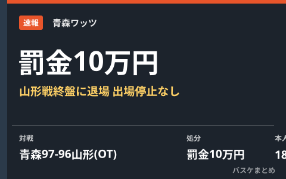

青森のブレイクフィールドに罰金10万円 山形戦終盤に退場、出場停止はなし

Bリーグは10月13日、青森ワッツのジェイミン・ブレイクフィールドに規律委員会の決定として罰金10万円の懲罰を科すと発表しました。対象は10月11日の山形ワイヴァンズ戦。1点差の接戦となった第4クォーター残り28秒ごろ、フレグラントファウルとテクニカルファウルが立て続けに宣告され、失格・退場となりました。出場停止の処分はありません。本人は32分11秒の出場で18得点を記録し、チームはオーバータイムの末97-96で山形に勝利しています。
第4Q終盤の退場、オーバータイムで青森が勝利
青森ワッツと山形ワイヴァンズの対戦は1点差を争う接戦となり、第4クォーター残り28秒ごろにブレイクフィールドがフレグラントファウルとテクニカルファウルを立て続けに宣告され、退場となりました。勝負の最終盤でコートを去る形になりましたが、チームはそのままオーバータイムに持ち込み、97-96で山形を下しています。本人はこの日32分11秒の出場で18得点を挙げていました。
| 対戦 | スコア |
|---|---|
| 青森ワッツ ○ － ● 山形ワイヴァンズ（延長） | 97－96 |
罰金10万円、出場停止なしの根拠
Bリーグは10月13日、規律委員会の決定としてブレイクフィールドに罰金10万円の懲罰を発表しました。出場停止がない理由は、同一シーズン内で初めての退場の場合は罰金のみが基準となっているためです。金額はカテゴリーによって異なり、ブレイクフィールドが所属するB.ONEでは最低10万円とされています。一方、同一シーズン内で同じ理由の退場を繰り返した場合は、最低1試合の出場停止と罰金最低20万円が科される規定です。
Q. フレグラントファウル・テクニカルファウルの立て続けの宣告とは？
A. 報道では詳しい反則の内容までは確認できていませんが、両方が宣告された場合は規定により退場（失格）となります。詳細なプレー内容は公式発表・報道では明らかにされていません。
出典：Bリーグ公式「規約・規程違反による懲罰について」／青森ワッツ公式発表／バスケットボールキング「青森のブレイクフィールドに罰金10万円…山形戦の終盤に退場、出場停止はなし」ほか
https://www.bleague.jp/media_news/detail/id=666253
https://basketballking.jp/news/japan/20261013/637611.html
https://aomori-wats.jp/news/38079/